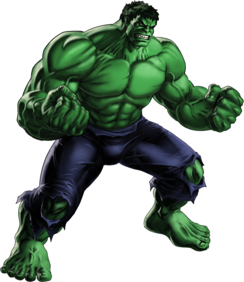

Wolverine is a fictional superhero appearing in American comic books published by Marvel Comics,
most often in relation to theX-Men superhero team.
Born James Howlett and commonly known as Logan,
Wolverine is a mutant who possesses animal-keen senses, enhanced physical capabilities,
and powerful regenerative ability known as a healing factor.
He has been depicted variously as a member of the X-Men, Alpha Flight, and the Avengers.